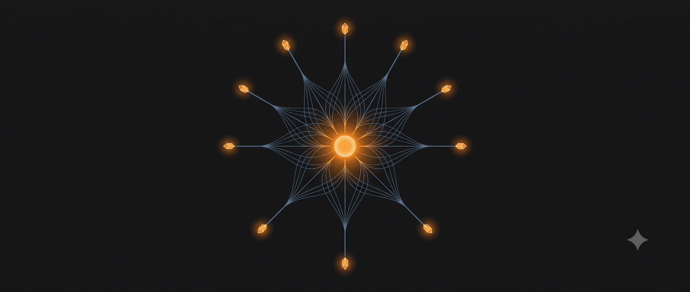

100 kỹ năng QUAN TRỌNG nhưng đa số mọi người NGÓ LƠ
Kỹ năng giao tiếp và sự nghiệp
🗣️ 1. Giao tiếp ngầm & Trí tuệ xã hội (Social Intelligence)
1. Kỹ năng lắng nghe chủ động: Nghe để hiểu bản chất, không phải nghe để chờ đến lượt mình nói.
2. Kỹ năng đọc vị ngôn ngữ cơ thể: Nhận biết sự bồn chồn, dối trá hoặc cởi mở qua ánh mắt, dáng ngồi của đối phương.
3. Kỹ năng đặt câu hỏi mở: Biết cách đặt câu hỏi để người khác tự mở lòng thay vì hỏi những câu chỉ trả lời “Có/Không”.
4. Kỹ năng điều chỉnh tông giọng: Biết lúc nào cần hạ giọng để tạo sự tin cậy, lúc nào cần nhấn giọng để tạo uy lực.
5. Kỹ năng kiểm soát khoảng cách giao tiếp: Đứng/ngồi ở khoảng cách vừa đủ để đối phương không cảm thấy bị xâm phạm không gian riêng tư.
6. Kỹ năng ghi nhớ tên người khác: Ghi nhớ và gọi tên họ một cách tự nhiên trong lần gặp thứ hai (vũ khí tối thượng trong ngoại giao).
7. Kỹ năng im lặng đúng lúc: Biết khi nào nên im lặng để người khác xả bớt cơn giận hoặc để tạo khoảng lặng suy ngẫm.
8. Kỹ năng chấm dứt một cuộc trò chuyện lịch sự: Rời khỏi một cuộc tán gẫu mà không làm mất lòng người đối diện.
9. Kỹ năng khen ngợi cụ thể: Không khen chung chung (“Bạn giỏi quá”), mà khen vào chi tiết (“Cách bạn xử lý phần mở đầu bài thuyết trình rất thông minh”).
10. Kỹ năng tiếp nhận lời khen: Thay vì từ chối ngượng ngùng, hãy nhìn thẳng, mỉm cười và nói “Cảm ơn”.
11. Kỹ năng kể chuyện: Biến những số liệu, thông tin khô khan thành một câu chuyện có bối cảnh và cảm xúc để thuyết phục người nghe.
12. Kỹ năng “Small talk”: Biết cách bắt chuyện xã giao với người lạ trong thang máy, bữa tiệc để phá vỡ bầu không khí ngột ngạt.
13. Kỹ năng từ chối lịch sự: Biết từ chối những lời nhờ vả vượt quá khả năng hoặc thời gian của mình mà không thấy tội lỗi.
💼 2. Sinh tồn công sở & Phát triển sự nghiệp
1. Kỹ năng “Quản lý sếp”: Hiểu phong cách làm việc của sếp để chủ động cung cấp thông tin sếp cần trước khi bị đòi.
2. Kỹ năng báo cáo vấn đề đi kèm giải pháp: Không bao giờ ném một rắc rối cho cấp trên mà không mang theo ít nhất 2 phương án giải quyết.
3. Kỹ năng đàm phán lương bổng dựa trên giá trị: Biết cách chứng minh năng lực bằng số liệu thay vì than nghèo kể khổ để xin tăng lương.
4. Kỹ năng viết Email chuyên nghiệp: Viết ngắn gọn, rõ ràng tiêu đề, đúng trọng tâm và ghi rõ người nhận cần làm gì.
5. Kỹ năng điều hành một cuộc họp hiệu quả: Giữ cuộc họp đúng tiến độ, đúng chủ đề và kết thúc bằng một danh sách việc cần làm rõ ràng.
6. Kỹ năng nhận feedback : Tách biệt giữa lời phê bình công việc và sự công kích cá nhân để tiếp thu một cách lý trí.
7. Kỹ năng đưa ra phản hồi tiêu cực: Áp dụng quy tắc “khen trước đám đông, chê nơi riêng tư” và tập trung vào hành vi, không chỉ trích con người.
8. Kỹ năng tự tiếp thị bản thân: Làm tốt là chưa đủ, phải biết cách để những người có thẩm quyền nhìn thấy kết quả của bạn một cách khéo léo.
9. Kỹ năng tạo network: Xây dựng mối quan hệ với đồng nghiệp khác phòng ban trước khi bạn thực sự cần đến sự trợ giúp của họ.
10. Kỹ năng bàn giao công việc: Viết tài liệu hướng dẫn (SOP) chi tiết để người sau có thể tiếp quản vị trí của bạn trong 1 ngày mà không gặp rắc rối.
11. Kỹ năng nhảy việc văn minh: Rời đi trong êm đẹp để giữ thể diện lâu dài cho bản thân.
12. Kỹ năng ủy quyền: Biết cách giao việc cho cấp dưới phù hợp với năng lực của họ thay vì ôm đồm làm hết một mình.
Tư duy phản biện và kỷ luật cá nhân
🧠 3. Tư duy phản biện & Xử lý thông tin
1. Kỹ năng nhận diện ngụy biện: Phát hiện ra các lỗi logic của người khác (hoặc của chính mình) trong tranh luận.
2. Kỹ năng kiểm chứng thông tin: Thói quen kiểm tra nguồn gốc của một tin tức giật gân trước khi tin sái cổ hoặc bấm chia sẻ.
3. Kỹ năng tư duy từ nguyên bản: Bóc tách vấn đề về những sự thật cơ bản nhất, thay vì suy luận dựa trên phép loại suy hoặc kinh nghiệm cũ.
4. Kỹ năng phân biệt giữa “Sự thật” và “Quan điểm”: Sự thật là thứ có thể chứng minh, quan điểm chỉ là góc nhìn cá nhân của một ai đó.
5. Kỹ năng đọc nhanh có chọn lọc: Lướt qua một cuốn sách hay bài báo dài 10 trang để nhặt ra đúng 3 ý quan trọng nhất trong 5 phút.
6. Kỹ năng ghi chú có hệ thống: Sử dụng các sơ đồ tư duy hoặc phương pháp Cornell để lưu trữ kiến thức thay vì chép lại nguyên văn.
7. Kỹ năng tự nhận thức định kiến cá nhân: Biết rằng xu hướng của não bộ là chỉ tìm kiếm những thông tin ủng hộ quan điểm sẵn có của mình.
8. Kỹ năng đặt mình vào góc nhìn của đối thủ: Hiểu được tại sao người khác lại nghĩ khác mình để tìm ra điểm chung hoặc sơ hở của họ.
9. Kỹ năng dự đoán hệ quả bậc hai: Không chỉ nghĩ về kết quả ngay lập tức (bậc một), mà phải tính toán xem kết quả đó sẽ kéo theo những hệ lụy gì tiếp theo.
10. Kỹ năng buông bỏ chi phí chìm: Sẵn sàng từ bỏ một dự án, một mối quan hệ độc hại hoặc một ngành học dù đã đầu tư rất nhiều thời gian/tiền bạc vào đó.
🛠️ 4. Tự quản trị bản thân & Kỷ luật cá nhân
1. Kỹ năng quản lý sự chú ý: Khả năng khóa dòng suy nghĩ vào đúng một việc mà không bị xao nhãng bởi thông báo điện thoại.
2. Kỹ năng thiết lập ranh giới cá nhân: Bảo vệ thời gian nghỉ ngơi của mình bằng cách không check tin nhắn công việc sau 9h tối.
3. Kỹ năng chịu đựng sự nhàm chán: Khả năng lặp đi lặp lại một thói quen tốt (tập gym, học từ vựng) mỗi ngày dù không còn hứng thú ban đầu.
4. Kỹ năng trì hoãn sự sung sướng: Chống lại mong muốn mua sắm, ăn uống vô độ,… tức thời để đổi lấy mục tiêu lớn trong tương lai.
5. Kỹ năng đóng gói năng lượng: Sắp xếp lịch trình dựa trên năng lượng của cơ thể (làm việc khó lúc tỉnh táo nhất, việc dễ lúc mệt mỏi).
6. Kỹ năng tự tạo động lực: Không phụ thuộc vào các video truyền cảm hứng trên mạng, tự biết cách bắt tay vào làm để sinh ra động lực.
7. Kỹ năng dọn dẹp tâm trí: Viết hết mọi lo lắng, đầu việc ra giấy trước khi đi ngủ để bộ não được thả lỏng hoàn toàn.
8. Kỹ năng thừa nhận mình sai: Dũng cảm thốt ra câu “Tôi đã sai và tôi sẽ sửa” thay vì tìm lý do bao biện để giữ sĩ diện.
9. Kỹ năng “Đơn nhiệm”: Loại bỏ ảo tưởng về việc đa nhiệm (multitasking) để tập trung hoàn thành xuất sắc từng việc một.
10. Kỹ năng quản lý sự kỳ vọng: Đừng mong đợi mọi thứ phải hoàn hảo 100% ngay từ lần đầu tiên xuất hiện.
Cảm xúc và tài chính cá nhân
🧘 5. Trí tuệ cảm xúc & Sức khỏe tinh thần
1. Kỹ năng gọi tên cảm xúc: Phân biệt được mình đang giận, đang ghen tị, đang tự ti hay chỉ là đang mệt mỏi thể xác.
2. Kỹ năng trì hoãn phản ứng khi tức giận: Áp dụng quy tắc hít thở 10 giây trước khi mở miệng buông lời sát thương lúc nóng nảy.
3. Kỹ năng tự trò chuyện tích cực: Thay thế tiếng nói tự chỉ trích bên trong bằng những lời động viên mang tính xây dựng.
4. Kỹ năng ở một mình: Cảm thấy hạnh phúc và bình yên khi ở một mình mà không cần phải tìm kiếm sự chú ý từ người khác.
5. Kỹ năng đồng cảm không đồng tình: Thấu hiểu lý do tại sao đối phương hành động như vậy mà không nhất thiết phải đồng ý với hành vi đó.
6. Kỹ năng xả stress lành mạnh: Có một bộ lọc áp lực riêng (chạy bộ, viết lách, nấu ăn) thay vì chọn rượu bia, chất kích thích hoặc mua sắm vô độ.
7. Kỹ năng vượt qua nỗi sợ bị từ chối: Xem việc bị từ chối (khi tỏ tình, khi xin việc) là một phản hồi thông thường của cuộc sống, không phải sự hạ thấp giá trị bản thân.
8. Kỹ năng tha thứ cho chính mình: Buông bỏ những dằn vặt về sai lầm trong quá khứ để bước tiếp.
9. Kỹ năng nhận biết mối quan hệ độc hại: Nhìn ra những dấu hiệu thao túng, kiểm soát quá đà từ bạn bè, người yêu để rút lui kịp thời.
10. Kỹ năng ngắt kết nối kỹ thuật số: Sống sót thoải mái qua 24 giờ không chạm vào mạng xã hội.
💰 6. Quản lý tài chính cốt lõi
2. Kỹ năng phân biệt “Muốn” và “Cần”: Luôn tự hỏi “Mình có chết hoặc gặp rắc rối lớn nếu không mua món này không?” trước khi quẹt thẻ.
3. Kỹ năng tự động hóa tiết kiệm: Cài đặt để ngân hàng tự trích 10-20% lương vào quỹ tiết kiệm ngay khi nhận lương, trước khi bạn kịp chi tiêu.
4. Kỹ năng đọc hiểu hợp đồng: Đọc kỹ tất cả các điều khoản, chữ in nhỏ của hợp đồng bảo hiểm, ngân hàng, lao động trước khi đặt bút ký.
5. Kỹ năng tính toán lạm phát: Hiểu rằng giữ tiền mặt trong heo đất là đang mất tiền theo thời gian và biết cách tìm kênh trú ẩn tài sản.
6. Kỹ năng thương lượng giá cả: Không ngại mặc cả hoặc đàm phán để có mức giá tốt nhất khi mua các tài sản lớn (xe cộ, nhà đất, dịch vụ dài hạn).
7. Kỹ năng sử dụng thẻ tín dụng thông minh: Coi thẻ tín dụng là công cụ thanh toán, không phải là tiền mặt mình sở hữu; luôn thanh toán 100% dư nợ đúng hạn.
8. Kỹ năng lập quỹ khẩn cấp: Xây dựng một khoản tiền bằng 3-6 tháng chi phí sinh hoạt tối thiểu để đề phòng rủi ro mất việc, ốm đau.
9. Kỹ năng định giá thời gian cá nhân: Biết lúc nào nên bỏ tiền thuê người khác làm (ví dụ: dọn nhà, ship đồ) để dành thời gian đó làm việc có giá trị cao hơn.
10. Kỹ năng quản lý nợ: Biết phân biệt nợ tốt (vay để đầu tư, kinh doanh sinh lời) và nợ xấu (vay để tiêu xài, mua đồ xa xỉ).
Công nghệ và kỹ năng sinh tồn
💻 7. Kỹ năng số & Công nghệ hiện đại
2. Kỹ năng tìm kiếm nâng cao trên Google/AI: Sử dụng các toán tử, cú pháp hoặc Prompt thông minh để tìm ra thông tin chuẩn xác trong vài giây thay vì lướt vô định.
3. Kỹ năng sao lưu dữ liệu tự động: Thiết lập hệ thống sao lưu dữ liệu quan trọng lên Cloud thường xuyên để không bao giờ rơi vào cảnh mất máy tính là mất hết.
4. Kỹ năng bảo mật thông tin cơ bản: Sử dụng trình quản lý mật khẩu, bật xác thực 2 lớp (2FA) cho mọi tài khoản quan trọng.
5. Kỹ năng lọc sạch bảng tin: Chủ động hủy theo dõi (Unfollow), chặn (Block) những trang mạng tiêu cực, drama để bảo vệ năng lượng não bộ.
6. Kỹ năng phân biệt lừa đảo mạng: Nhận diện ngay các đường li..nk lạ, email giả mạo ngân hàng, chiêu trò trúng thưởng giả.
7. Kỹ năng sử dụng phím tắt: Học thuộc các phím tắt của hệ điều hành và các phần mềm làm việc thường xuyên để nhân đôi tốc độ xử lý.
8. Kỹ năng tổ chức thư mục: Đặt tên và sắp xếp file khoa học để tìm lại bất cứ thứ gì trong vòng 5 giây.
🏡 8. Quản trị đời sống & Sinh tồn thực tế
2. Kỹ năng sơ cứu cơ bản: Biết cách ép tim ngoài lồng ngực (CPR), nghiệm pháp Heimlich khi có người bị hóc dị vật, băng bó vết thương đúng cách.
3. Kỹ năng nấu ăn cơ bản: Biết cách tự chuẩn bị một bữa ăn đủ chất, ngon miệng mà không cần dùng đến đồ ăn nhanh hay thực phẩm đóng hộp.
4. Kỹ năng sửa chữa đồ gia dụng nhỏ: Biết thay bóng đèn, thông tắc bồn cầu, sửa vòi nước rò rỉ, sử dụng các công cụ cơ bản như khoan, tua-vít.
5. Kỹ năng đọc bản đồ và định hướng: Biết cách tìm đường bằng la bàn, bản đồ giấy hoặc định vị phương hướng khi điện thoại hết pin, mất sóng.
6. Kỹ năng chuẩn bị đồ đạc tối giản khi đi xa: Xếp toàn bộ đồ dùng cần thiết cho 1 tuần vào đúng 1 ba lô gọn nhẹ.
7. Kỹ năng kiểm tra xe trước khi đi xa: Biết kiểm tra áp suất lốp, nước làm mát, dầu máy và cách tự thay lốp dự phòng khi xe gặp sự cố giữa đường.
8. Kỹ năng giặt giũ và bảo quản quần áo: Biết đọc ký hiệu trên mác quần áo để phân loại đồ giặt, biết cách tẩy các vết bẩn cứng đầu (mực, dầu mỡ).
9. Kỹ năng thoát hiểm: Biết cách xử lý và tìm lối thoát nhanh nhất khi xảy ra cháy nổ ở nhà cao tầng, động đất hoặc kẹt trong đám đông hỗn loạn.
10. Kỹ năng quản lý tủ thuốc gia đình: Luôn dự trữ sẵn các loại thuốc cơ bản (hạ sốt, tiêu hóa, giảm đau) và kiểm tra hạn sử dụng định kỳ.
Sức khỏe và nghệ thuật sống
🏃 9. Quản trị sức khỏe chủ động
1. Kỹ năng “vệ sinh” giấc ngủ: Thiết lập môi trường tối, mát, không thiết bị điện tử trước khi ngủ 1 tiếng để có giấc ngủ sâu sâu nhất.
2. Kỹ năng đọc nhãn thành phần dinh dưỡng: Xem lượng đường, calo, chất béo bão hòa của thực phẩm trước khi mua thay vì chỉ nhìn bao bì quảng cáo.
3. Kỹ năng lắng nghe cơ thể: Nhận biết sớm các dấu hiệu kiệt sức (burnout), thiếu nước, hoặc stress để nghỉ ngơi kịp thời.
4. Kỹ năng uống nước đúng cách: Uống rải rác trong ngày, không đợi đến khi khát khô cổ mới uống một cốc lớn đầy.
5. Kỹ năng giữ tư thế đúng: Duy trì tư thế thẳng lưng khi ngồi làm việc, nâng đồ nặng bằng cơ đùi chứ không bằng cơ lưng để tránh thoát vị đĩa đệm.
6. Kỹ năng thở bằng cơ hoành (thở bụng): Giúp nạp nhiều oxy hơn, giảm nhịp tim và làm dịu hệ thần kinh ngay lập tức khi căng thẳng.
7. Kỹ năng tập thể dục không cần phòng gym: Biết cách tận dụng trọng lượng cơ thể (Calisthenics) để giữ dáng ở bất kỳ đâu.
🌍 10. Kỹ năng công dân & Nghệ thuật sống (Lifestyle)
1. Xếp hàng và kiên nhẫn nơi công cộng: Không chen lấn, không thúc giục người phía trước tại quầy thanh toán, sân bay.
2. Dọn dẹp sau khi dùng: Luôn lau sạch bàn, thu dọn khay thức ăn của mình tại các quán ăn nhanh hoặc quán cà phê tự phục vụ.
3. Kỹ năng kiểm soát âm lượng nơi công cộng: Nói chuyện vừa đủ nghe, đeo tai nghe khi xem video hoặc nghe nhạc ở nơi đông người.
4. Kỹ năng tôn trọng quyền riêng tư của người khác: Không tự ý xem điện thoại, nhật ký, không hỏi những câu quá sâu về thu nhập, hôn nhân nếu không thân thiết.
5. Đúng giờ: Đến trước cuộc hẹn 5-10 phút; nếu trễ hẹn, phải chủ động thông báo và xin lỗi trước khi giờ hẹn bắt đầu.
6. Kỹ năng phản biện mà không công kích cá nhân: Tập trung tranh luận vào luận điểm của đối phương, không mang ngoại hình, gia cảnh hay học vấn của họ ra để miệt thị.
7. Kỹ năng giữ lời hứa từ những việc nhỏ nhất: Nếu đã hứa gọi lại, hứa gửi file, hãy làm đúng giờ. Nếu không làm được, đừng hứa.
8. Kỹ năng viết thư cảm ơn hoặc lời xin lỗi viết tay: Một hành động cổ điển nhưng tạo ra ấn tượng sâu sắc không bao giờ phai nhạt.
9. Kỹ năng tự học suốt đời: Khả năng tự tìm tòi, nghiên cứu và làm chủ một lĩnh vực mới hoàn toàn khi đã rời ghế nhà trường.
10. Kỹ năng chấp nhận sự bất định: Hiểu rằng cuộc sống luôn có những biến số nằm ngoài tầm kiểm soát và học cách linh hoạt thích ứng thay vì than vãn.
11. Kỹ năng bảo tồn năng lượng cá nhân: Biết từ chối những cuộc vui vô bổ, những người độc hại hút cạn năng lượng tích cực của bạn.
12. Kỹ năng “Unlearn” (Học cách quên): Sẵn sàng xóa bỏ những kiến thức, tư duy đã lỗi thời để nạp vào những tư duy mới phù hợp với thực tại.
🔍 Phân tích bài viết
📌 Tóm tắt ý chính
- Bài liệt kê 100 kỹ năng thiết yếu thuộc 10 nhóm: xã hội, nghề nghiệp, tư duy, tự quản trị, cảm xúc, tài chính, số hóa, đời sống, sức khỏe, và công dân — tất cả là “meta-skills” không phụ thuộc ngành nghề cụ thể
- Điểm chung của mọi nhóm: đây là kỹ năng ngầm, không được giảng dạy trong trường học nhưng quyết định chất lượng cuộc sống và sự nghiệp
- Nhóm tự quản trị (kỷ luật, chú ý, kiểm soát cảm xúc) đóng vai trò nền tảng — không có nó, các kỹ năng khác không thể phát huy
- Bài phản ánh nghịch lý: hệ thống giáo dục dạy kiến thức chuyên môn nhưng bỏ qua kỹ năng sống cơ bản
- Giá trị thực không phải ở số 100 mà ở việc giúp tự xác định điểm mù bản thân
🗺️ Mindmap
💡 Insight & Góc nhìn đa chiều
Xu hướng: Trong kỷ nguyên AI thay thế dần kỹ năng kỹ thuật, các kỹ năng “người” trong danh sách này — lắng nghe chủ động, đọc cảm xúc, xây dựng niềm tin — trở thành tài sản khó tự động hóa nhất. Đây là hướng đầu tư bản thân có ROI ngày càng tăng.
Ai được lợi: Người dưới 35 tuổi đang xây dựng nền tảng — đây là “hệ điều hành” cho toàn bộ sự nghiệp. Người đã có chuyên môn sâu nhưng thiếu soft skills sẽ thấy 20% kỹ năng này tạo ra 80% sự khác biệt trong thăng tiến.
Điều ẩn: 100 kỹ năng này có tính nhân bản (multiplicative) chứ không phải cộng dồn. Người giỏi lắng nghe + tư duy phản biện + kiểm soát cảm xúc không cho kết quả = 3 điểm mà = tổng hợp sức mạnh theo cấp số nhân. Đây là lý do một số người phát triển vượt bậc trong khi người khác mãi giẫm chân tại chỗ dù làm việc chăm chỉ như nhau.
⚖️ Phản biện
- Thiếu thứ tự ưu tiên: 100 kỹ năng không có lộ trình học sẽ khiến người đọc choáng ngợp và không bắt đầu được. “Cần tất cả” thực tế = “Không biết bắt đầu từ đâu” = không làm gì.
- Phụ thuộc văn hóa: “Small talk” và “kiểm soát khoảng cách giao tiếp” có tiêu chuẩn khác nhau giữa văn hóa Nhật (im lặng = tôn trọng), Mỹ (silence = awkward), và Việt Nam (hỏi thu nhập = thân thiện). Áp dụng nguyên xi có thể phản tác dụng.
- Ảo giác đầy đủ: Danh sách bỏ qua kỹ năng chuyên môn ngành. Thực tế, kỹ sư giỏi kỹ thuật nhưng thiếu soft skills vẫn có thể thành công hơn người ngược lại ở nhiều môi trường kỹ thuật Nhật Bản/Đức. Soft skills khuếch đại năng lực nhưng không thay thế năng lực.
- Không có cơ chế đo lường: Làm thế nào biết mình đã “lắng nghe chủ động” hay “từ chối lịch sự” ở mức đủ tốt? Thiếu metrics = thiếu feedback loop = không cải thiện được thực chất.
❓ Câu hỏi mở
- Trong 100 kỹ năng này, nếu chỉ chọn 5 để tập trung trong 1 năm tới, 5 kỹ năng nào tạo ra hiệu ứng dây chuyền lớn nhất — tức là kỹ năng nào khi cải thiện sẽ tự động kéo theo nhiều kỹ năng khác?
- Kỹ năng nào trong danh sách sẽ bị AI làm giảm giá trị trong 5 năm tới (tìm kiếm thông tin, viết email, nhớ tên) và kỹ năng nào sẽ tăng giá trị vì AI không thể thay thế được?
- Có tồn tại “điểm ngưỡng tối thiểu” — chỉ cần đủ không gây cản trở — hay tất cả 100 kỹ năng này đều phải đạt đến mức xuất sắc mới tạo ra sự khác biệt thực sự?
🇻🇳 Liên hệ Việt Nam
- Nhóm công sở: Văn hóa thứ bậc cao ở VN khiến kỹ năng “quản lý sếp” và “tự tiếp thị khéo léo” quan trọng hơn phương Tây. Nhiều nhân viên VN giỏi nghề nhưng không được công nhận vì thiếu khả năng “cho người có thẩm quyền nhìn thấy kết quả”.
- Nhóm tài chính: Quỹ khẩn cấp 3-6 tháng và phân biệt nợ tốt/xấu đặc biệt cấp thiết khi VN thiếu mạng lưới an sinh xã hội — mất việc = mất thu nhập ngay, bảo hiểm thất nghiệp không đủ mạnh.
- Nhóm kỹ năng số: VN nằm trong top các nước bị lừa đảo mạng ở ĐNÁ (theo wiki: Scams, Slaves & Malware-as-a-Service từ Campuchia). Kỹ năng nhận diện phishing và bảo mật 2FA là kỹ năng sinh tồn thực sự, không phải nice-to-have.
- Nhóm sức khỏe: Văn hóa “cố làm, bỏ nghỉ ngơi” phổ biến ở VN khiến vệ sinh giấc ngủ và lắng nghe cơ thể bị đánh giá thấp — trong khi đây là nền tảng hiệu suất bền vững.
📖 Giải thích thuật ngữ
- Social Intelligence (Trí tuệ xã hội): Khả năng đọc hiểu và điều hướng tình huống xã hội phức tạp — như người lái xe thuần thục trong giờ cao điểm, biết đọc dòng chảy mà không cần suy nghĩ từng bước
- Chi phí chìm (Sunk Cost): Tiền/thời gian đã bỏ ra không thể lấy lại. Bẫy kinh điển: học 3 năm ngành không thích nhưng vẫn tiếp tục vì “lỡ rồi” — quyết định đúng nên dựa vào tương lai, không phải quá khứ
- Tư duy từ nguyên bản (First Principles): Bóc tách vấn đề xuống sự thật cơ bản nhất thay vì dùng kinh nghiệm cũ. Elon Musk không hỏi “mua pin ở đâu rẻ hơn?” mà hỏi “pin làm từ gì?” rồi tự tổng hợp vật liệu với giá 1/10
- Đơn nhiệm (Monotasking): Làm một việc tại một thời điểm. Não người không thực sự đa nhiệm — nó chỉ chuyển đổi nhanh giữa các task, mỗi lần chuyển mất 15-25 phút để lấy lại focus sâu
- Calisthenics: Tập luyện dùng trọng lượng cơ thể (hít đất, kéo xà, squat) không cần phòng gym hay thiết bị — phù hợp mọi hoàn cảnh, hiệu quả cao, chi phí zero